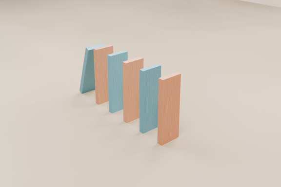
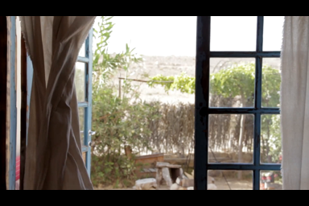
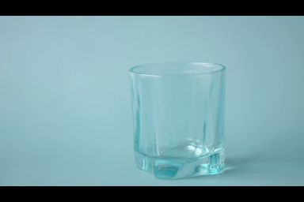

Showcase conditions
Simple dominoes
Initial Scene: A straight row of six wooden domino blocks rests on a flat beige surface. The blocks alternate between blue and orange colors with vertical ridges. The first block is tilted forward while the remaining five stand upright. External Force: Begin with the first domino tilted forward and the remaining five dominoes upright and at rest. Apply downward gravity. Keep only the ground fixed; leave all six dominoes free.

Curtain
Initial Scene: A light brown curtain hangs beside a large open window overlooking a garden, with its upper edge attached above the frame. External Force: A strong gust of wind blows inward through the open window onto the curtain. Keep its upper attachments fixed. Fixed camera.

Milk pour
Initial Scene: An empty blue-tinted faceted tumbler stands alone against a smooth pale-blue studio background. External Force: Tilt the pouring container to pour milk into the glass, with its outlet aimed into the glass opening. Fixed camera.

Red wine pour
Initial Scene: An empty blue-tinted faceted tumbler stands alone against a smooth pale-blue studio background. External Force: Tilt the pouring container to pour red wine into the glass, with its outlet aimed into the glass opening. Fixed camera.
